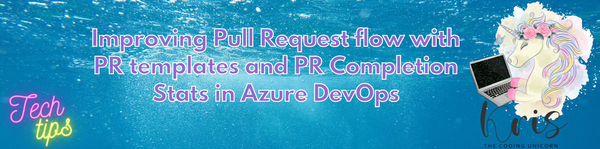
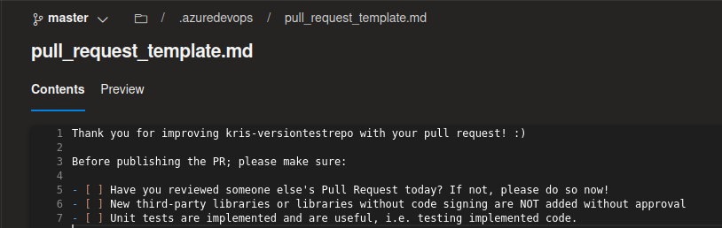
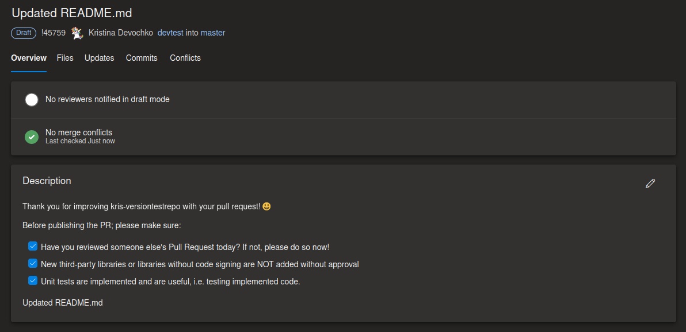
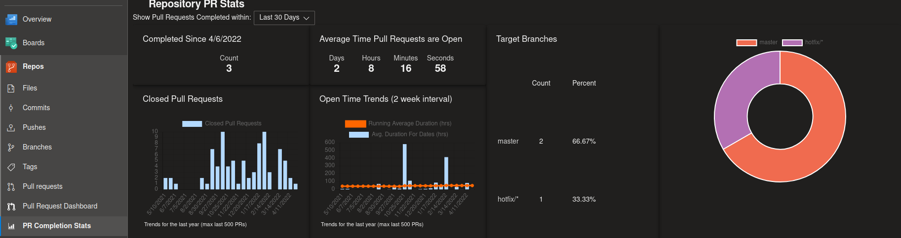

Improving Pull Request Flow With PR Templates and PR Completion Stats in Azure DevOps

Code reviews and pull requests are a totally normal practice these days if you're working together with other developers. Even if you're working solo you probably don't want to commit to main branch directly if you have CI/CD in place. That's when adding changes through pull requests and code reviews come into picture.
For many organizations and development teams this can be a tough process for many reasons where urgency, time limitations, overload with other tasks play a huge role. Nevertheless we still want to ensure that the established policies are being followed in order to ensure that every single line of code we commit is of highest possible quality. And there are ways we can enforce policies of course. One of the ways are automated checks - this is a really important one since we want to avoid human error or a multi-tasking PR reviewer to miss out on a critical bug in the changeset. But it's also about humans, about collaboration and making the code review process easier both for the one committing changes and the one reviewing the changes. And for that there are quite a few tools available!
Today I would like to share two tools which we're using in the team in Azure DevOps.
PR templates
Pull request templates can be really helpful both for developers and reviewers - this is basically a checklist that gets automatically populated in the pull request description section once the PR is published, even if it's published as a draft. The checklist can include the policies that are crucial to ensure that you've done properly before merging the changes to main branch. In big projects there may be tens or even hundreds of policies and it can quickly get really hard to remember all of them, especially if you're a new developer. Such a checklist will at least help to validate your changes towards the most important code quality requirements that may not be covered by automatic checks. PR templates can also help reviewers to understan what kind of checks the pull request author has done prior to publishing the PR.
You can start with PR templates quite easily - in the root of your repository in Azure DevOps create a folder called ".azuredevops" and create a file with name pull_request_template.md or pull_request_template.txt - I recommend using the Markdown file due to it's more extensive formatting capabilities.

And the rest is history😺 Once it's done the template will automatically be populated in the PR description section as you may see in the screenshot below:

You can also tweak PR templates a bit further like configuring branch specific pull request templates and multiple pull request templates, you can find more about how to do that here: Improve pull request descriptions using templates
PR Completion Stats extension
Another tool that can be helpful to get an overview of the code review activities and engagement is an Azure DevOps extension called "Pull Request Completion Report". Once it's installed a new section called "PR Completion Stats" will pop up in "Repos" section for every repository in Azure DevOps and will provide you quite a good overview and statistics of an average time pull requests are open, PR target branches, most active PR code reviewers, which reviewer groups are involved in code reviews and more.
Here's an example of how it looks like in one of my repos:

This statistics can help you see if the code review engagement is decreasing which may cause more confusion for developers. And this can also help you to create some engagement initiatives like rewarding most active and most engaged code reviewers which also motivates all the developers to contribute and feel more included. I think that it's a pretty cool feature to have in place and I'd love to hear if you tried it as well!😺
You can read more and download the extension from here: Azure DevOps Pull Request Stats
Thanks for reading and till next tech tip 😻